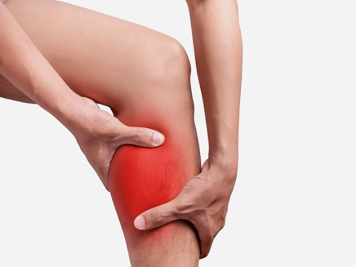

https://cafe.daum.net/subdued20club/ReHf/5775465?svc=cafeapi

누가 강제로 내 종아리 근육 뭉탱이로 잡아 뜯어서 다른쪽으로 옮겨놓은 느낌
또는 존나 쌔려 쳐서 파열 시킨 느낌
심한 통증은 몇초이긴 하지만 존나 지옥임
잠결에 오열
일어나면 절뚝거림
===
지금 양발 다 이거 걸림
https://cafe.daum.net/subdued20club/ReHf/5775465?svc=cafeapi

누가 강제로 내 종아리 근육 뭉탱이로 잡아 뜯어서 다른쪽으로 옮겨놓은 느낌
또는 존나 쌔려 쳐서 파열 시킨 느낌
심한 통증은 몇초이긴 하지만 존나 지옥임
잠결에 오열
일어나면 절뚝거림
===
지금 양발 다 이거 걸림
피씨근이머임
컴터 많이 하면 생기는 근육
어릴땐 어떻게 하는지 몰라서 맨날 당했는데, 발가락을 머리쪽으로 당기면 된다는거 알고 나서 부터, 발가락 땅기면 바로 풀리더라.
자다가 나도 모르게 기지개 쫙 펴서 근육 놀라고 종아리 저렇게 됨
예전에 자다가 자주 쥐났었는데, 운동 시작하고 나서는 한 번도 안 걸리더라
걷다가 갑자기 저거오더니 일주일간 걸을때마다 계속 아파서 병원갔더니 근육 파열 -- 하..
임신하면 존나 자주 쥐남
근육 찢어지는 느낌이긴 함
못 일어날 것 같으면 일단 발바닥 바닥쪽으로 힘주면 됨
이거 그냥 재빨리 일어나서 발 딛으면 됨
자다가 처음 종아리 쥐났을때 악!!! 하고 막 소리 질렀다고 부모님이 말해주심ㅋㅋㅋ
이제는 하도 익숙해져서 가끔 오면 잠결에 그냥 발쭉뻗고 발가락 몸쪽으로 땡기고 풀고 잠ㅋㅋㅋㅋ
연에 한번 두번정도씩 꼭 저러던데 이유가뭘까
기지개 잘못펴선 아침컨디션 개박살
마그네슘 챙겨먹어라..
남자라서 확률은 적지만 빈혈인 경우 자다가 쥐 날 수 있어. 검사해봐.
저럴땐 재빨리 침대서 내려와 서면 됨
종아리 가려워서 반대발로 긁어주다 쥐남 ㄹㅇ 개아픔
저거 힘 조절해가면서 70~80정도로 유지하면 PC근 자극 됨 맘급해져서 힘좀더주면 바로 좆되는거